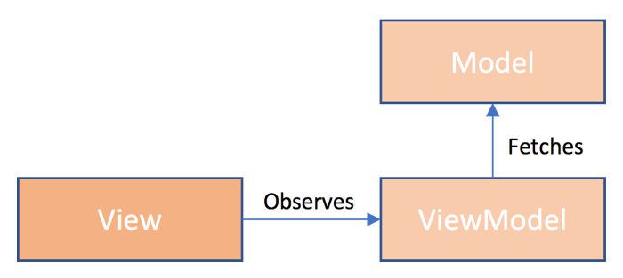

Introduction
MVVM
The Bifrost frontend is focused on the MVVM - Model View ViewModel approach.

This basically says that the view observes a view model, which exposes state typically as observables that can be reacted to in the view. The state is often something that is provided from the serverside and is called a model.
Knockout
Bifrost is built on top of KnockoutJS and providing extensions to simplify things.
One extension that is built is the ability to compose views together, read more here.
observableQueryParameter
You can easily observe query parameters and fall back to a default value, if the parameter is not present. If the parameter changes, typically without doing a full reload from the server - the value will act as any other Knockout observable.
Bifrost.namespace("My.Namepace", {
viewModel: Bifrost.views.ViewModel.extend(function() {
this.observableValue = ko.observableQueryParameter("NameOfQueryParameter", "DefaultValue");
})
})